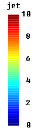

jetReturns the "jet" color map |
|
Information
This information is part of the Modelica Standard Library maintained by the Modelica Association.
Syntax
ColorMaps.jet(); ColorMaps.jet(n_colors=64);
Description
This function returns the color map "jet." A color map is a Real[:,3] array where every row represents a color. With the optional argument "n_colors" the number of rows of the returned array can be defined. The default value is "n_colors=64" (it is usually best if n_colors is a multiple of 4). Image of the "jet" color map:

See also
ColorMaps, colorMapToSvg, scalarToColor.Syntax
colorMap = jet(n_colors)
Inputs (1)
| n_colors |
Default Value: 64 Type: Integer Description: Number of colors in the color map |
|---|
Outputs (1)
| colorMap |
Type: Real[n_colors,3] Description: Color map to map a scalar to a color |
|---|